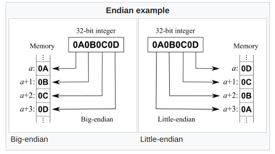
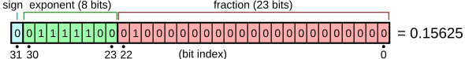
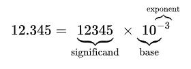

main
- In Zephyr, the primary source code file is
src/main.c. - In Zephyr (and many other C frameworks), the
main()function is the entry point of the program.
BME554L - Fall 2025
Duke University
September 8, 2025
HIGH and LOWLOW is commonly GNDHIGH is commonly either 5, 3.3 or 1.8 V.On and Off states at the lowest level in hardware.base10 (decimal): 0-9 in summed powers of 10.base2 (binary): 0, 1 in summed powers of 2.Word: Number of bits to use to express a value
| Bit Depth | Name | Example |
|---|---|---|
| 1 | Bit | 0 |
| 4 | Nibble | 1001 |
| 8 | Byte | 10011011 |
“Standard” word length can be system architecture dependent (16-, 32- or 64-bits)
The bits–or bytes–of a word can be organized from most significant to least significant or vice versa; this order is referred to as endianness.
Raw binary data (bits) can quickly become cumbersome to read and write. To make data more human readable, we can encode it into a more compact form.
base16 (hexadecimal): 0-9, A-F in summed powers of 16 (0-15).0x or 16 subscript: 22546 = 0x5812 = 581216https://en.wikipedia.org/wiki/UTF-8
| Name | Bit Depth | Value Range |
|---|---|---|
| bool | 1 or 8 | true/false (1/0) |
| byte | 8 | 0-255 (unsigned) |
| char | 8 | -128-127 (signed) |
| int | 16 | -32768-32767 (signed) |
| uint | 16 | 0-65535 (unsigned) |
| long | 32 | -2147483648-2147483647 (signed) |
| float | 32 | 1.2E-38–3.4E38 (signed) |
| double | 64 | 2.3E-308-1.7E308 (signed) |


double (64-bit floating point).The nRF52833 only has 128 kB of RAM. If we can use smaller data types, we can store more data in memory.
Variables can be limited in their scope (where they are accessible).
const).#define directive after #include preprocessor directives and are typically typed in ALLCAPS.Warning
Watch out for integer math (fixed point) that will yield a non-integer (floating point) result.
Warning
Watch out for the range of your data type! If your mathematical operation exceeds the min/max value of the bit depth, the data will “wrap around”.
| Formatted Print Placeholder | Data Type |
|---|---|
%d |
decimal (int) |
%ld |
long decimal (32-bit) |
%lld |
long long decimal (64-bit) |
%u |
unsigned decimal (uint) |
%f |
float |
%c |
char |
%s |
string (char array) |
%x |
hex (int) |
%b |
binary (int) |
%p |
pointer (memory address) |
One of the greatest strengths–and most dangerous aspects–of C is the use of pointers. A pointer is a variable that stores the memory address of another variable. Pointers are used to pass variables by reference (in contrast to value) to functions, and to dynamically allocate memory.
Pointers save memory and time by not copying the value of a variable to a function. Instead, the function can directly access the variable in memory. This is especially useful for large data structures.
int a = 5;
void my_function(int *a_ptr) { // *a_ptr is a pointer to int a
*a_ptr = 10; // dereference a_ptr to change the value of a
// note no value is returned; it is assigned directly to the memory address
}
void main() {
printk("The value of a is %d\n", a); // prints 5
my_function(&a); // pass the memory address (&) of a to my_function
printk("The value of a is %d\n", a); // prints 10
}#include <zephyr/kernel.h> // include system libraries
#include "my_great_library.h" // include your own libraries
#define MY_MACRO 1 // define MACROs
void my_function(int32_t my_input); // function prototype
int32_t my_global_variable; // global variable
void my_function(int32_t my_input) { // function definition
// do something
// no return b/c of void return type
};.{}.0 indicates success, and any other value indicates failure.void.void. The function may still operate on variables if they are global.mainsrc/main.c.main() function is the entry point of the program.0 (not 1!).int my_array[5] = {1, 2, 3, 4, 5};int my_array[5] = {0};int my_array[5];for loop), ormemcpy().0 (not 1!).switch/case statements.enum Level {
LOW, // by default, 0
MEDIUM, // 1
HIGH // 2
};
void main(void) {
enum Level my_level = MEDIUM;
switch (my_level) {
case LOW:
printk("Low level\n");
break; // break out of switch statement
case MEDIUM:
printk("Medium level\n");
break;
case HIGH:
printk("High level\n");
break;
default:
printk("Unknown level\n");
break;
}
}#include "your_library.h" can be used to include a library in your source code.your_library.h contains the function prototypes and macro definitions.your_library.c contains the function definitions.YOUR_LIBRARY_H is tested for, and it is defined, then it has already been included into the code.your_library.c), you need to include this header file:cmake as its build system, which helps link libraries used in your source code.CMakeLists.txt file:A great summary of the different types of memory in C is summarized below from http://www.gotw.ca/gotw/009.htm:
malloc()/free() and their variants.